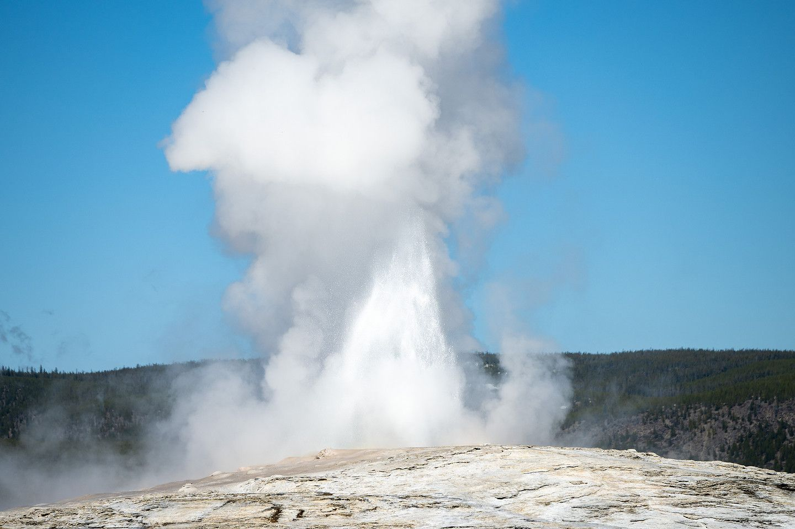

Video Game Design
Build playable worlds with game engines, original art, and a team that gets it.
Life Here
Hackathons. Cybersecurity. A hybrid electric race car. Late nights building something with friends that actually works. Some of the best parts of college happen outside the classroom.
The Computing Society
Every Wednesday at 5:00 PM, the STC quad (rooms 375, 385, 394, and 398) becomes a hangout space for builders. Grab some food, open your laptop, and hack on whatever you are into: Your own project, a class assignment, or something brand new with friends who love cybersecurity, cloud apps, data, drones, even a hybrid electric race car.
No experience needed and no tryouts. Show up your first semester and walk away with friends, projects for your portfolio, and probably a new favorite hobby.
Societies and Teams
Try one. Try five. Every group is part of the Computing Society, and every one of them is building something.
Build playable worlds with game engines, original art, and a team that gets it.
Learn ethical hacking, sharpen your defenses, and think like an attacker.
Build, program, and fly drones. Then see what they can do.
Teach machines to spot patterns, make predictions, and surprise you.
Dream up the challenge, help run the event, or team up and compete.
Turn ideas into live websites from the first sketch to the final launch.
Find the story in messy data with Python.
Put real apps in the cloud with AWS, Azure, and Google Cloud.
Get comfortable at the command line and build with open source.
Design, build, and race a hybrid electric car at national competition.
Earn your license and talk across town or around the world.
Meet engineers, grow your network, and see where technology can take you.
Find mentors, make friends, and grow your place in engineering and computing.
Groups listed on the Computer Science and Engineering societies page. Can’t wait for Wednesday? Warm up with a challenge puzzle.
Rexburg and Beyond
Rexburg is a friendly college town in eastern Idaho, and two of the most famous national parks in America are practically next door.

Yellowstone and Grand Teton are nearby national parks for weekend adventures. Saturday road trip, anyone?

Explore the St. Anthony Sand Dunes, ski or ride at Kelly Canyon, visit Grand Teton and Yellowstone national parks, or spend a day at Yellowstone Safari Park. Nearby trails, rivers, lakes, hot springs, and forests give every season its own adventure.


Three 14-week semesters each year give you room for classes, an internship, or a well-earned break. See the academic calendar.
Faith and Campus Life
BYU-Idaho is owned and guided by The Church of Jesus Christ of Latter-day Saints, and here faith and learning grow side by side.
Hear inspiring speakers at weekly devotionals, serve in campus congregations, and live by an Honor Code that keeps campus respectful and welcoming.
…when ye are in the service of your fellow beings ye are only in the service of your God.
Your Next Step
Tour campus, drop in on a Wednesday night, and picture yourself here.